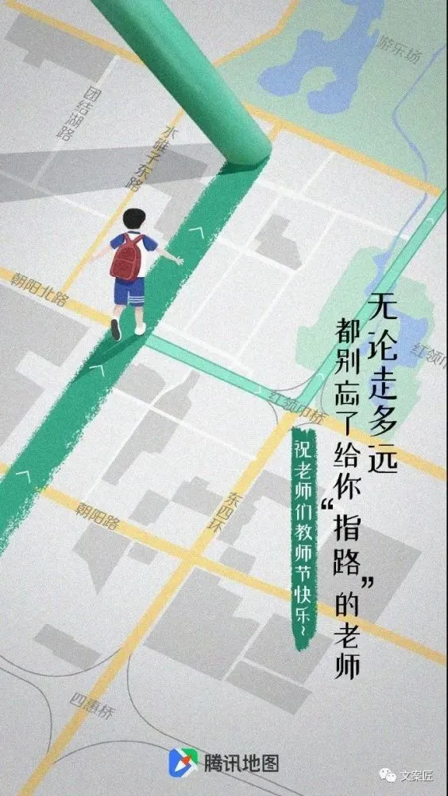

致全体老师的一封信

教师节（英文名：Teachers' Day），旨在肯定教师为教育事业所做的贡献而设定的节日，日期为每年公历的9月10日。
在中国近现代史上，多次以不同的日期作为过教师节。直至1985年，第六届全国人大常委会第九次会议通过了国务院关于建立教师节的议案，才真正确定了1985年9月10日为中国第一个教师节。这一天，学校会为教师颁发奖金、证书等，学生会给老师送花、送贺卡等，以此来表达对教师的真挚祝福及衷心问候。
一、是你拨开云雾，为求知若渴的灵魂，指明前路

这个节日唯一给人的感觉就是怀旧了。那些给予我们知识和引导我们成长的人，成为每个人生命中的一个个阶梯，一个个烙印。
九月金秋，丹桂飘香、柔风送爽，辛勤的园丁又沐浴在职业带来的荣光。9月10日“教师节”是如此的响亮，神州大地礼仪之邦，穿越时空激情回荡。从东海之滨到雪域西藏，从南国宝岛到塞外边疆，从三尺讲台到知识殿堂，无不沉浸在欢乐的海洋。“老师，您辛苦了!”一声声真诚的问候浓缩了所有的期望；“老师，节日快乐!”一句句深情的祝福蕴涵了无数的吉祥!时代的强音不断撞击着传道授业者的心房，尊师重教已成时尚，科教兴国绽放清香，教师就像耕耘的老农挑起了箩筐，沉甸甸的收获虽然压弯了脊梁，却把幸福写在脸上，这就是中国教师的写照，中国教师的度量!
有人说，教师是烛光，燃烧自己释放光芒:
 有人说，教师是翅膀:
有人说，教师是翅膀:
能让学子在太空翱翔；有人说，教师是奠基，构筑的人才大厦高万丈。可我认为，老师是真正推动社会进步的精神巨匠，他们用柔弱的双肩承载着民族腾飞的希望，传播着社会进步积蓄的能量：科技、理念、信仰!为了桃李芬芳，他们呕心沥血、挂肚牵肠，为了培育栋梁，他们废寝忘食、执着顽强，从风华正茂到双鬓染霜，从慷慨激昂到退休还乡，有多少个夜晚挑灯到天亮？有多少汗水播洒在课堂？引领学子披荆斩棘攀登书山殿堂、乘风破浪泛舟知识海洋。
从黎民百姓到文臣武将，从一招一式到驰骋赛场，从蹒跚学步到凌空翱翔，从呀呀学语到放声歌唱，从点撇竖横到文采飞扬，从加减乘除到运算流畅，谁没有感悟老师的滋养？谁没有体验老师的衷肠？谁没有品味老师的佳酿？老师有海纳百川的胸膛，老师有取之不尽的宝藏，从儒家思想到素质引航，从粉尘飞扬到到浏览上网，从“臭老九”到“教书匠”，老师走过的路艰难坎坷、泥泞漫长，却愈战愈勇、愈挫愈强，一代一代源源流长，因为他们传递的是接力巨棒，留下的是精神食粮，注入的是拼搏刚强，才使炎黄子孙昂首挺立于世界的东方。
从睡狮苏醒气势浩荡，到巨龙腾飞赶超列强，从神舟飞天圆千年梦想，到潜艇入海探世纪宝藏，从港奥回归游子返乡，到雅典称雄世界景仰，哪一样没有幕后英雄的力量？可人们总爱把赞美的颂歌献给“鲤鱼跃龙门”“骄子射天狼”，其实，老师才是时代的英雄、社会的榜样，乖巧的百灵鸟应该为老师纵情歌唱，老师能使沙漠不再荒凉，孕育绿洲溪水流淌，老师有灵丹妙方，能让愚笨变得富有智商。即使倾长江为墨，也画不全老师的光芒，纵然让大地作纸，也写不完老师的华章。
一滴水可以折射出太阳的光芒，无数滴灵感的水则汇聚成智慧的海洋，灵魂的工程师们总是从一点一滴开始，用心血和汗水托起明天的太阳!
二、最后感谢老师在我七年级以来到现在的陪伴
虽说您有时批评我们时我会在后面偷偷的说您的坏话，但是谁又能知道您为我们付出了多少，谁又能真正的理解你们呢！
最最后感谢您一年以来的涛涛教导，老师我爱你，祝您节日快乐
八年（6）班
周晨鹭
您的岗位很平凡，平凡的岗位却显现出伟大。您把自己的一生奉献给没有任何血缘关系的孩子，您把关爱留给他们，为他们点亮前进的明灯，自己却仍然坚守在平凡的岗位。教师节到了，愿所有的教师节日快乐!